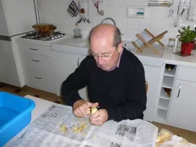
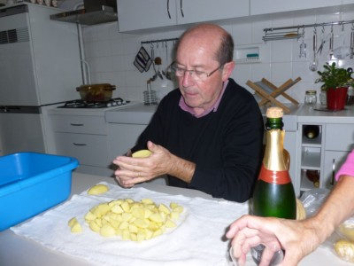
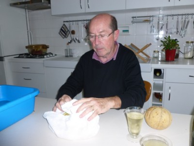
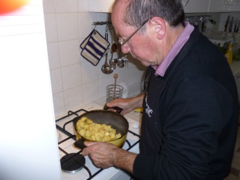

Recette
n° 250 : pommes
de terre rôties du chef
Michel Pioger
Ingrédients pour 6 personnes
1 - 1500 g de pommes de terre fermes (Charlotte par exemple)
2 - 4 cuillers à soupe d'huile de tournesol ou d'arachide ou
de colza (pas d'olive)
3 - 4 cuillers à soupe de beurre
5 - une grosse pincée de gros sel
Préparation
1 - éplucher le pommes de terre et les réserver dans l'eau pour ne pas qu'elles noircissent à l'air)

2 - les couper en morceaux (par exemple en 12 si la pomme de terre fait 100 g environ)

3 - les mettre dans un torchon propre et les essorer légèrement pour en retirer l'excès d'eau

4 - dans une cocotte, déposer beurre et huile et mettre à feu très vif
5 - dès que beurre et huille font de la mousse, mettre les pommes de terre d'un coup
6 - secouer pour que les corps gras enduisent les pommes de terre

7 - laisser cuire 10 minutes en remuant très délicatement 2 à 3 mois maximum à la cuiller de bois
8 - au bout de 10 minutes, on doit constater que cela rissole
9 - poursuivre la cuisson jusqu'à 20 minutes sans trop remuer
10 - égoutter, remettre en cocotte, saler, et tenir à feu doux jusqu'au service (sans attendre trop longtemps)
Observations
1 - recette effectuée à Quiberon le 22 septembre
2011 par le chef Michel Pioger en personne : excellent !
2 - se sert avec un rôti de boeuf, du chef Michel
Pioger également (cf. recette n°249) : attention au
timing
car viande et patates doivent être servies chaudes et
simultanément.
3 - l'égouttage prévu en 10 est facultatif, mais il a l'avantege d'alléger le plat pour sa digestion.